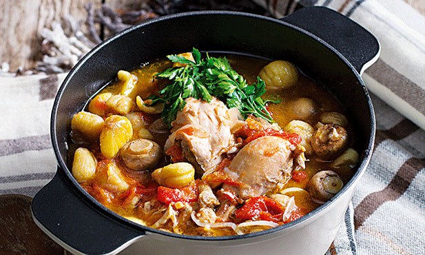

WIMF
Frango com castanhas
85 min
Média
6 pessoas
Ideal para os dias mais frios, este frango com castanhas, guisado com cogumelos e temperado com ervas frescas, é aconchego certo. Leve o tacho para a mesa, e não se esqueça do pão.
Ingredientes
| Alho | 8 dentes |
|---|---|
| Tomate de rama | 800g |
| Louro | 1 folha |
| salsa fresca | QB |
| coentros frescos | QB |
| tomilho fresco | QB |
| vinho branco | 2 dl |
| castanha congelada | 500g |
| cogumelo Paris | 400g |
| frango sem miúdos | 1,2kg |
| azeite | 3 c. de sopa |
| cominhos moídos | 1 c. de chá |
| sal | 1 c. de sopa |
| cebola | 200g |
Preparação
Passo 1
Peça no talho para cortarem o frango em pedaços.
Passo 2
Aqueça o azeite num tacho, e aloure os pedaços de frango de todos os lados em lume médio a forte.
Passo 3
Reduza o calor, polvilhe com os cominhos e o sal e junte as cebolas cortadas em rodelas finas e os dentes de alho esborrachados. Tape e deixe cozinhar suavemente.
Passo 4
Lave o tomate, corte-o em pedaços, limpe-o de sementes e adicione-o ao frango, juntamente com a folha de louro, atada com 4 pés de salsa e outros tantos de coentros e de tomilho. Regue com o vinho branco e cozinhe tapado mais 30 minutos.
Passo 5
Introduza as castanhas, já descongeladas, mexa e volte a tapar.
Passo 6
Limpe os cogumelos com papel de cozinha, coloque-os no tacho, tape e cozinhe mais 20 minutos ou até o frango e as castanhas estarem macios.
Passo 7
No final, aumente o lume e ferva mais 5 minutos destapado. Salpique com salsa picada antes de servir.